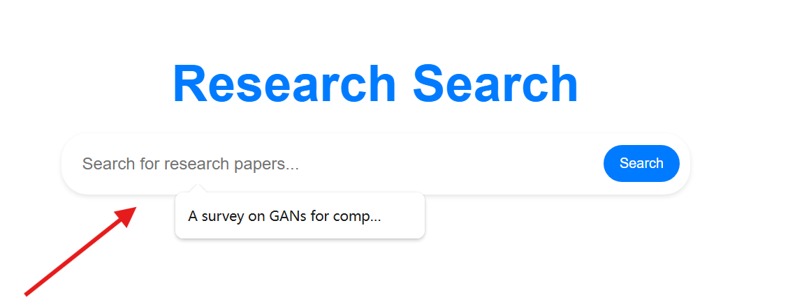
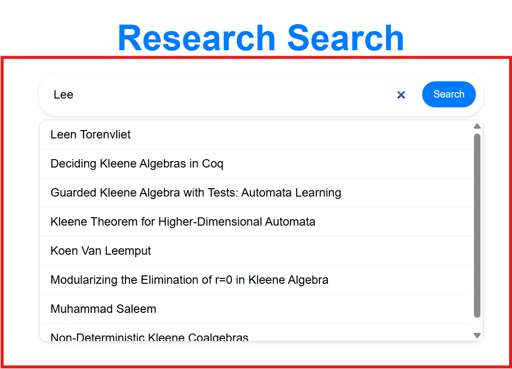
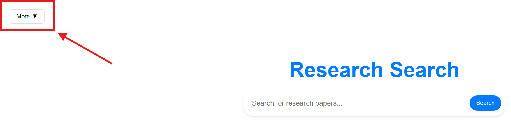
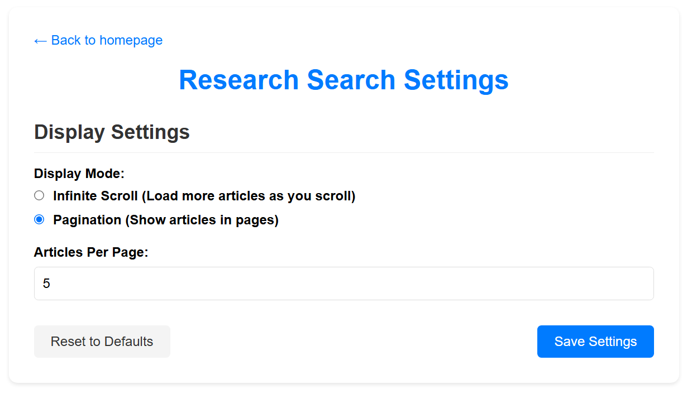
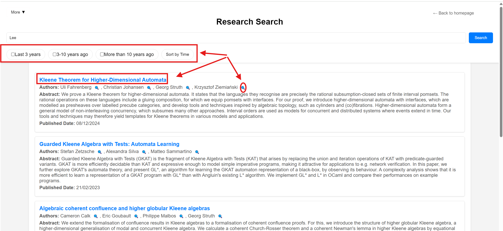

Research Search Help Documentation
Learn how to use Research Search effectively
Getting Started
Research Search is a powerful tool designed to help you find academic papers and research quickly and efficiently. When you click to search it will show the recently search content.
Note: When you begin to input it will give you suggestions for the current input.

Basic Function
You can click more to use other functions
- You can click Authors to find the target author and click his/her name to see more information
- And you could through settings to set the different format to look throught the search results 
- ...
- ...

Tip: ...
Search Results
The search result will show as above image, and there are some useful functions need to explain:
- Sort or select by time: Click the Specific range of time or click sort by time it will provide the specific results1
- Click title: This will show the detail information about this article
- Click magnifying glass after the author: This action will search this author immediatelly
Technical Support
If you have any question about this or you find any issue or problems on our website, please contact us and we'll appreciate for your help:
- Web UI and Database issue please contact: yunyi.zhang@ucdconnect.ie
- Accuracy or source problems please contact: yansen.zhao@ucdconnect.ie
- Relation and cooperation diagram issue please contact: xianhan.huang@ucdconnect.ie